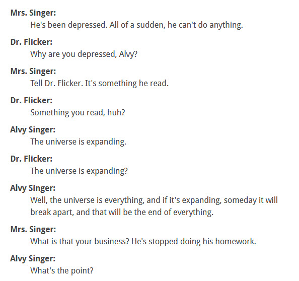

This article is a bit of a ramble-on meandering stream of disjointed thoughts and wanderings. It concerns the WTF concept and idea that the USN would take a Naval Aviator, implant them, train them to interface with an artifice, and then let them wander about the United States as an “average Joe” experiencing life. It makes no sense, and then to be “retired” in the manner that I have (previously) described, adds complexity to a really basic question. What was this all about?
And yes, I have mentioned all this before.
Nothing makes sense
I described my experiences. I described my travels. I described my work experience. I described how the systems worked. I described my “retirement”, and I described what I know of our benefactors, and their understanding of the universe. I’ve described it all.
But yet none of it makes sense.
I mean, I can understand that it doesn’t make sense to “sheeple”. They are automatons that are born and bred to serve. But it just doesn’t make sense to me. I mean, come on, even the bullshit narratives of “Space Marines”, and “Reptilians” make better sense.
There’s no clear cut answers.
Instead, all I find myself doing is writing reams upon reams of lore here on MM. And I seem to be driven to describe things related to how the universe works, and how thoughts work, and the quantum aspects of our associations within this nursery that the human species seems to be so damn attached to.
What’s the point?
What’s the point?
I am reminded of a scene from the Woody Allen movie “Annie Hall”.
Annie Hall is one of the truest, most bittersweet romances on film. In it, Allen plays a thinly disguised version of himself: Alvy Singer, a successful--if neurotic--television comedian living in Manhattan. Annie (the wholesomely luminous Dianne Keaton) is a Midwestern transplant who dabbles in photography and sings in small clubs. When the two meet, the sparks are immediate--if repressed. Alone in her apartment for the first time, Alvy and Annie navigate a minefield of self-conscious "is-this-person-someone-I'd-want-to-get-involved-with?" conversation. As they speak, subtitles flash their unspoken thoughts: the likes of "I'm not smart enough for him" and "I sound like a jerk." Despite all their caution, they connect, and we're swept up in the flush of their new romance. Allen's antic sensibility shines here in a series of flashbacks to Alvy's childhood, growing up, quite literally, under a rumbling roller coaster. His boisterous Jewish family's dinner table shares a split screen with the WASP-y Hall's tight-lipped holiday table, one Alvy has joined for the first time. His position as outsider is uncontestable he looks down the table and sizes up Annie's "Grammy Hall" as "a classic Jew-hater." The relationship arcs, as does Annie's growing desire for independence. It quickly becomes clear that the two are on separate tracks, as what was once endearing becomes annoying. Annie Hall embraces Allen's central themes--his love affair with New York (and hatred of Los Angeles), how impossible relationships are, and his fear of death. But their balance is just right, the chemistry between Allen's worry-wart Alvy and Keaton's gangly, loopy Annie is one of the screen's best pairings. It couldn't be more engaging. --Susan Benson
In the scene a young Woody Allen is seeing a (school) psychologist because he doesn’t seem to be interested in anything. No matter what his parents or his teachers do, he just cannot get motivated. The dialog goes like this…

Indeed.
If the universe is going to expand in a hundred trillion, billion years, and then all collapse upon it’s self a trillion, trillion leaders later…
….What’s the point?
Yeah. The movie is a trip. If you haven’t seen it, go ahead and watch it. It’s pretty bizarre, and I must of watched it about four times while in University.
Alvy Singer: You know, even as a kid, I always went for the wrong women. I think that's my problem. When my mother took me to see Snow White, everyone fell in love with Snow White. I immediately fell for the Wicked Queen.
So, all jokes aside, I’ve been wondering about all this.
Nothing makes sense to me.
The harsh retirement just doesn’t seem to fit. The purposes, as I understand it to be doesn’t seem to fit either. I mean (to say), “Anchoring world-lines”, heck! Most people don’t even know what the population of the United States is, and I’m supposed to describe a role in manipulation of world-line clusters?
When I lived in Arkansas, they actually thought that Boston was a city outside of Kentucky. I kid you not. They didn’t even know how many inches were in a foot, or how many inches were in a meter for goodness sakes!
And yet, I am to try to explain all this…!
And what I do end up explaining is so fundamental simple that it defies the imagination the I would be tasked to write on about it. Like “time” for instance, or the relation of the non-physical to the physical. Or how different species think differently, or even the very nature of thoughts! All of these things are so obvious that it doesn’t make sense that I would configured as some sort of tool to disseminate this information.
The point is really clear.
Why am I tasked to explain the outrageously simple to my fellow humans via this venue?
After all, and it seems quite clear right now, that the PTB that rule over the levers of power (that ultimately control MAJ) do not give a flying fuck about Americans, humanity, knowledge or spirit. They just do not care.
They. Just. Do. Not Care.
So it makes little sense (to me) that they would allow or approve of my “retirement”, yet at the same time making it so that I must continually and passionately discharge, and de-gorge my “knowledge” to the public. They do not care. They make no money off of it.
Why set me to full-on gouge?
Questions
An influencer asked this question…
“Likewise, something doesn't sit right with me when the Gov takes its best, brightest, and most competitive aviators & engineers, put's 'em through a brutal career including war, implants, and obscene responsibilities, and then turns around and wants to put 'em in the garbage disposal when they go to retire. That is really bizarre. Maybe you can write more about that one of these days. “
Indeed. And I pretty much responded much like this…
Indeed, to me it seems like America and many of it’s agencies are run by psychopathic idiots or… perhaps (better yet) sycophants appointed by psychopathic idiots. It really seems that way.
What was my purpose?
What was it? To anchor world-lines?
Well, if that was the case, perhaps the MAJestic leadership could have found more “average” folk to perform that “heavy lifting”. It seems that in that particular role, being average was a mandated requirement. So it just doesn’t seem that the performance criteria was all that well mapped out … if that was the sole objective.
Perhaps THIS is the sole objective. THIS, right now, all this…..
Maybe this MM is the sole accumulation of over forty years in MAJestic. Maybe my purpose is to (for what ever reason) is to help the human species understand their place in a universe that is way outside of their ability to grasp. Maybe its to help give a little nudge towards some pretty fundamental understandings that most humans haven’t a clue about. Maybe…
Maybe…
Or, maybe not.
Really. What’s the point of a mechanic realizes that thoughts can bend reality? What benefit does mankind obtain when a Uber Driver knows that time is nothing more than the accumulation of world-line travels? What benefit to mankind is it that there are different kinds of sentience, and that there are approved archetypes? How important is it that a carpenter, a computer technician, an accountant, a bus driver, and a housewife understands that we humans are growing and learning inside a policed nursery?
Nothing, I must add, really is all that clear.
The entire internet is filled with hordes of folk that are selling “snake oil” to a gullible audience. Some of it is “magic crystals”, some of it is “advice about reptilians”, some of it is “how to get rich”, while others talk about other things…
Ai!
And then to top it all off…
…what about my retirement. I mean, I get it. MAJ outsources the retirement. Just take the “best and brightest” and then when you are finished your toss them out into the dumpster with no fanfare. I mean, that’s the “American Way”, as illustrated in such timeless classic movies and “Office space” and “Joe vs the Volcano“.
But seriously, do you do that to people who you have invested millions, of not billions of dollars, on?
It’s like the spoiled, petulant child that pulls a temper tantrum and destroys the massive big-screen television by throwing an iPad at it. Everything is gone and wasted, and the child continues in complete oblivion as to the value and worth of the loss.
A discussion with a friend
I was having a discussion with a friend, not too long ago. In it we were talking about certain people we knew, and certain bosses. And one of the things that kept on cropping up was the idea that there are these people, bosses, people in power, that have zero ability to emote or see the consequences of their acitions.
As my friend said…
"A guy works for twenty years. You know his family, you see him day in and day out. you go through good times and bad times together. Then well, you need to cut head count. So you fire him. And that's that. And suddenly he no longer exists."
And there is no remorse. No compassion. No guilt. No understanding. It’s almost like you press the DEL key and Poof! all your association with him is gone in a nano-second.
Yeah. We know that these people abound.
What is so absolutely frightening is just how common it is in the United States today that they exist, and that they are thriving within enormous positions of absolute power.
Merit advancement only so far
It appears that advancement through merit only goes so far. Then you hit a “glass ceiling”, and you just cannot pass through that barrier. For above you lies the realm of the “special” people, and you do not belong there.
In that realm, other rules apply.
It’s sort of like this…
It seems like you must work really hard to be promoted though merit to get anywhere in America today. Then when you have achieved so much, there is this invisible glass ceiling that you hit. And no matter what you do, you cannot break through that invisible barrier.
Now above that barrier are the “anointed ones”. These are the people who are appointed by the upper-level bosses. We often don’t know what the appointment criteria is because many of them are absolutely clueless. I call them “the toadies”.
And of course, the “Bosses” are over all.
And that is how it appears the United States works today.
Sorry to say.
That is the impression that I get.
Answers
And with that impression comes some answers. You see, as long as you believe that the systems in place for control, power and advancement are the same for everyone, then my story and my experience makes no sense.
But, when you come to the conclusion that the leadership is stratified, and that each strata has it’s own set of systems for advancement, control, monitoring and understandings, then EVERYTHING falls into place. The toadies could care less about the underlings below them. They no more care about them than a cow cares about ants in the grass. Check off some boxes, and move on. No need to stop and take heed.
And when I look at things in that manner, it all makes sense. Everything makes sense.
The US elite, as the stupidest ruling class in the world, won't be able to stop relative or absolute decline. Yup! Main reason is because the American ruling class is one that does not deserve to be in that class. Just look at the top layer of people in that class. They are no more than mouthpieces having memorized buzz words and cliches, who got to where they are because of the stupidity of a dumbified populace. Oh, the same can be said of the rest of the so-called West. -Posted by: Oriental Voice | Mar 3 2021 19:28 utc | 35
And you can pretty much see the overall scheme of things. Right?
The Leadership are appointees
Yup, and they put their sycophant toadies in top levels of their organizations.
Here's a nice rambling rant along these lines, more or less from the Burning Platform blog. It is titled The ship of Theseus. Reprinted as found. All credit to the author. Edited to fit this venue, and I do believe that it's a pretty good read.
“Here is a rule to remember in the future when anything tempts you to feel bitter: not ‘This is misfortune’, but ‘To bear this worthily is good fortune.’” – Marcus Aurelius, Meditations
Somewhere between elementary school and fifth grade my parents bought a townhouse in a brand-new community built on a former farm field in East Windsor. The development was named Twin Rivers and it sat about a half a mile from Exit 8 of the New Jersey Turnpike. The project was designed to capitalize on commuters to NYC fifty miles to the north and young Boomer families fleeing the urban jungle of the late 1960’s.
The word townhouse makes it sound sophisticated, but it was just a plywood box in a long string of plywood boxes banged out under the Mid-Atlantic sun by the last of the old-school tradesmen that dominated the sprawl of suburbia; Italian masons, Polish plumbers, Piney carpenters. In the field in front of my house they built a monstrosity of a school, a squatting, gold, geodesic dome fixed to the ground like a cross between a UFO and a Bucky Fuller fever dream.
It was called the Ethel McKnight School after a local teacher who had served the community for over 45 years. For her efforts she received, as a token of respect and admiration, the world’s noisiest, hottest, asbestos-sprayed middle school, named in her honor.
We’d moved in from our former residence at Northgate Garden Apartments which featured no gardens and served as a gate to an endless plain of potato farms that happened to be to the north. We were, by today’s standards, fairly low on the economic ladder and the new home in a slightly nicer location was a mark of my parent’s upward mobility. It cost them a whopping twenty-seven thousand dollars and it was a stripped-down minimalist dwelling, but it had two floors and basement with a backyard-not much larger than a one car garage surrounded by fence to separate from the neighbors on either side.
I had my own room; my parents had a bigger one with its own bathroom and from the moment they moved in they went at it, one project after another to turn it into our own home. I spent most of my time in those first couple of months before school started exploring my surroundings. At the end of the row of houses that marked Bennington Drive was a freshly dug lake filled with murky brown water and snapping turtles. All of the streets had historical names based on the American Revolution as a way of giving some history to what was otherwise a brand-new town.
The place was saturated with history. I regularly picked up jasper arrowheads and grooved axes pecked from river cobbles in the adjoining field, ancient relics turned up by brand new activity and I kept them lined neatly on the shelves above my desk. Sometimes I’d turn up white, lead musket balls and verdigris colonial coppers, bits of broken Delftware, and blackened silver shoe buckles, wondering about the people who’d left them behind and where they’d gone. Just up the road was the site of Washington’s decisive blow against the retreating British columns at the battle of Monmouth, and on the other side of Route 1 to the west was Princeton where my own ancestors had fought so long ago.
And everywhere you looked there were scores of granite monuments and weathered memorial plaques commemorating one famous colonial figure or another. Washington Slept Here was an actual sign planted in the middle of Quaker Bridge Road, rooted beside a massive oak tree that had stood there for at least three centuries until it was removed years later, disappeared into the bowels of some State of New Jersey storage locker, the tree soon to follow to make room for more lanes, for more cars.
My father had taken a job with a Wall Street helping to integrate a computer language for business named COBOL into the mainframe computers that were just beginning to come on line. He took the bus every morning to Port Authority and in the evenings my mother and I would drive to the parking lot of Mom’s Peppermill and wait for him to climb off the orange and black striped Suburban Express, his pant cuffs filled with pale yellow punched tape chads.
Those years were, for me at least, the idyllic American childhood. I rode my bike, a blue Schwinn Stingray Deluxe with a banana seat and a sissy bar to deliver The Trenton Times to a couple dozen customers every morning of the week and twice that number on Sundays. I don’t remember how much I earned, it couldn’t have been much, but I remember having money of my own, of being able to buy a slice of pizza- only thirty-five cents, that I recall- and a cold 8 oz. Coca-Cola in the green glass bottle for another dime.
I held on to some of the change I earned, Mercury dimes and Standing Liberty quarters, not because they were made of silver, but because they looked like Roman coins to me; classic, beautiful. I didn’t like the Roosevelt dimes because they had little ridges, called reeding, that ran around the perimeter and because right down the road there was a gigantic sculpture of his head in the town bearing his name right on the edge of Lake Etra and every time we passed by it to go to the lumber yard, I’d look at his baleful stare, looking out across the lily pads like he was watching a bobber waiting for a strike.
I could never understand why they’d put that pensive face on a coin instead of the graceful Mercury with his winged cap and I have held a strange grudge ever since. And so, I grew up there for a time, solitary mostly, studiously aware of the world around me, imbued by the long trail of people that had been here before me, their artifacts and statues scattered about.
In the field between our home and the school was an old MIG, a captured North Korean jet stripped down to nothing more than the fuselage and canopy, dropped there on a small concrete pad by the local VFW post for kids to climb on. The skin was a sun-scorched olive drab and on each wing, there was a faded red start that vibrated in contrast to the rest. It was pretty big to an 11-year-old and I’d seen more than a few kids take a bad fall from the wings, divots of kid skin dug out on the raised rivets and bolts, heads split open climbing in and out of the derelict cockpit, little tufts of children’s hair sprouting from every metal snag.
Beyond that sat my school, its gilded dome oddly reminiscent of the shells on the giant snappers that lurked in the muddy lake beside it. I could walk across the field in a couple of minutes and be home before the rest of the kids finished filling the seats on the bus each afternoon. That year featured a lot of fragmented memories, some of which were clear as day to me half a century later while others remain concealed by a darkness that never abates.
At night the radio in my room played a mix of AM music that came in clear as a bell, 77 WABC and Cousin Brucie playing a constant mix of the greatest music I had ever heard; Black Magic Woman, The Long and Winding Road, Your Song, Green-Eyed Lady and The Tears of a Clown. The songs were always about some kind of love, but there was an innocence to it that fit the time, from I Want You Back sung by a kid my own age, to the heartbreaking words of a much older lady who’d lost out again in One Last Bell to Answer.
I would listen to those tunes, memorizing every line and then just before I fell asleep, I’d turn the dial to WOR and listen to Jean Shepherd from the opening music, the trumpet trill from some far off race track that led into the heart pumping tempo of Authur Fiedler and the Boston Pops knocking out one minute and fifty-seven seconds of Richard Stauss’ Bahn Frei Polka. He’d shill for a few minutes for his sponsor, General Tires (sooner or later you’ll own General) and then he’d launch into yet another nightly shaggy dog story from his own childhood in far off Gary, Indiana, an impossibly wonderful and far off place from my darkened bedroom in central New Jersey.
A few years later my parents moved us again. My mother had taken a course in bookkeeping at Trenton State College and began to do work for a string of shady businesses along Route 130. A banana importer with a name right out of a Scorcese movie and an aluminum siding sales company that morphed into an above ground swimming pool company when the weather warmed up. There was a retired boxer and sometime mentioned in the newspapers Gambino associate that had a couple of car washes and a TV rental outfit that did an early version of the check cashing business on the side and half dozen others besides.
I have no idea if my mother knew about the kind of work she was doing but there’s no way she couldn’t and now, looking back on her life through the rearview mirror of the years since she died, there’s no doubt that she was both smart enough and shrewd enough to parlay that skill set to our benefit. She had been born into abject poverty moving as she described it, from pillar to post her entire life until she met my father and fell in love. My father for his part continued to please his employers with his acumen and capacity to solve complex problems simply.
Eventually my parents, who’d married as teenagers and with nothing, bought a beautiful home in Princeton where I spent my teenage years attending a celebrated prep school and reaping the benefits of the American dream come to fruition. I went from memorizing the times tables and dressing like a pilgrim each Autumn, to learning Latin that I cannot forget even though I cannot use it; bo, bis, bit, bamus, bantus, bantur. I, isti, it, imus, istus, erunt.
My parents, descended from 11 generations of impoverished founders that struggled from the first colonies on the edge of the Hudson and the Millstone and through the centuries that followed, had finally reached the Promised Land. Where they had spent their lives sitting down to supper in the kitchen, we could now eat our dinner in the dining room.
Plutarch told the story of ship which sailed under Theseus and the youth of Athens, returned from Crete and continued to sail until the time of Demetrious Phalereus. And in that time whenever the boards would rot or the oars grow old, each piece was replaced one by one, over time until no part of that original ship remained, but that ship appeared to all who looked upon it to be the same as she ever was from the outside.
Philosophers Heraclitus, Plato, Plutarch, Hobbes and Locke have revisited the question over time, questioning that it either was or was not the same ship and thus the paradox arose. Old things go away, and once the living die. What was real becomes a memory, and then is forgotten, leaving little more than shards and fragments from which we can only surmise at their original purpose.
I did not turn out as my mother had hoped. I did well in school, nearly aced the SAT’s bound for an Ivy League education and shot for the gold ring but I chose to follow another path and enlisted in the Army to become a paratrooper, just like my uncle had. I wanted to serve my country like the long line of men in my family who’d gone before me, fighting and sometimes dying in places like Pleiku and Anzio, Kasserine and The Somme, Fredricksburg and Trenton.
I had, like all those singers I had listened to on the radio in my room at night, fallen in love, not with a girl but with my country, or at least the image I had of it in my mind. All of those trips to the Shore with its salty air and thundering waves and the moonlit drives home through the Pine Barrens, the picnics at Washington’s Crossing on the Delaware, the sight of New York City rising in the distance like some modern Camelot on those day trips my father would take us on, to see the museums and shop at Macy’s and FAO Schwartz, they all added up to something much bigger than any ambition my mother may have had for me.
And I followed it along gladly, expectantly, filled with pride, resolute. The tales told by my relatives under the apple tree in my grandparent’s yard while the sky dimmed and lightning bugs glowed, the hikes up to Bowman’s Tower not far from the old glassworks where my great-grandfather drowned, the camp-outs in backyards, the squirrel hunts with .22’s and later, frosty mugs of Stewart’s root beer brought to you on a tray they’d hook to the driver’s side window while you sat on the big leather seats in the big green Dodge and listening to the gentle sound of a parent’s laughter on a Summer night, they weighed more than the Universe in the balance of life as I rode the scale from the bottom to the top and back down again.
Near the end of my grandfather’s life, he told me that he was ready to go. He said that he had outgrown his time and I joked with him that he had years left, even at 95. I have spent my lifetime in love with my country but that is not the same thing as it once was. I feel like that woman singing that song about having one less bell to answer, one less egg to fry. I don’t choke up at the National Anthem anymore and the military haircut I have worn my entire adult life has grown out like the old man banging the drum in The Spirit of ’76, not out of fashion, but because no one will cut my hair unless I wear a mask.
I have become an anachronism in the country of my birth and every part of the contract I had between what I was taught to respect and uphold, to serve and protect has been breached and in bad faith, not by me, but my own government, by my own people. They have moved on to some other place while I march on to the beat of a different drummer, another time. It’s not easy to become an anachronism, but I understand my grandfather’s words now in a way I could never have known then.
I drove into Boston with my son today to visit a friend and to look at a greenhouse to dismantle and bring back home. It has been a good while since I have left the farm, never mind visit a city, but it was a shock to me. Everyone wearing their masks, resignedly, in complete capitulation to some obscene diktat that makes a mockery of everything I have ever believed about freedom, about liberty.
It broke my heart, not for me, but for the future my children will inherit. And though I kept it to myself the entire drive home, I could not help but wish for another outcome, a different course that we could have taken somewhere along the way. But this is our time and so I will make the very best of it that I can so that my children will have the kind of memories I have before they too discover those truths that everyone must at some point face.
America is the ship of Theseus. For all appearances it resembles the country in which I was born, in which my father and his father before him were born, grew up, lived and prospered in, but it has been replaced, board by board, nail by nail, until it is a paradox built of nothing more than memories of what it once was.
Oh isn’t that the truth?
Yes it is.
And people are getting FED UP with the United States today. Consider this rant by Frank Scott…
Ring Out The Old: Ring In The Old
By Frank Scott
While our sacred democracy was allegedly being served by a stupid attempt to unsuccessfully impeach an ex-president for the second time and essentially tell more than 70 million Americans that they might as well vote for Pavlov, FDR, Hitler or Oprah Winfrey since any alleged exercise of supposed freedom on their part would be meaningless in the rape of language we call a democracy.
You know, the one with a billionaire class getting richer by the second and Americans across the board sinking lower by the minute.
But enough good news, let’s move on to the even better signs of our political economic progress against logic, morality and majority rule, something that vanished in practice the moment our euro ancestors arrived and the people who’d lived here for millennia were brutally forced out of their homelands.
The world’s most expensive medical wealth-care system has killed more than 500,000 Americans while we’re being told that China has only created protection for its people that makes us look like bloodthirsty private profit fanatics because it is run by authoritarians and isn’t a sacred democracy like ours.
You know, the one where your vote and mine are equal to the vote of any billionaire, if you believe nose picking is a way to perform a self lobotomy or you are a venture capitalist interested in a start up called Butt Coin which operates on a revolutionary AI system (Amoral Intelligence) called Blockhead.
Its stock just went up 23 billion points ten minutes ago so college graduates should start investing and show just how good your education was and how strong your belief is in capitalist democracy.
After all, how can any formally indoctrinated American not appreciate the incredible logic of our free market in which milk is more expensive than gasoline.
What could make more economic sense?
Milk comes from a cow, which produces more of it on a daily basis while petroleum takes millions of years to reproduce its supply. Even without consideration of either ones affect on the environment, that makes at least as much sense as nose picking self-lobotomies.
Or are you one of those deplorables concerned about our environment and the market green profit ventures said to be our only hope for useless long-term change to save humanity and not just its upper classes?
Who is most responsible for creating the destruction of nature reduced to a branding title of Climate Change?
A menacing American socialist gang has pointed out that the wealthiest billion people on earth produce 60% of greenhouse gases while the poorest billion produce only 5%.
But who can trust a murderous institution like The National Academy of Sciences?
Worse, another unholy representative of global communism reports that the tens of trillions of dollars in debt carried by earth residents collectively – whether we like it or not – represent a threat to the entire human race while the 2,000 richest people on earth have amassed more wealth than 4.5 billon human beings combined.
But who can believe a communist conglomeration of the richest institutions on earth and calling itself The World Bank?
Both institutions were talking about something much bigger than the egocentric American chosen people mythology since we play a major role in creating that inequality but also suffering it, with a public debt of 19 trillion and private debt of 27 trillion.
And if we believe, as too many of us still do, in what consciousness control and its professional staff of mind managers tell us, it’s all due to greedy union labor getting far too much in wages, salaries and pensions while a struggling investor class has to wait anxious moments for their deliveries of pet food, cosmetics, weapons, bitcoins, jewelry, and leisure wear.
And this with union membership which has been dwindling for the past forty years under assault by minority capital while the affluent top ten percent has seen its wealth skyrocket with the support of that same minority.
Isn’t the free market a marvel of democracy?
Yes, if you are among those who find rape a cost effective form of dating that avoids dinner and a movie and gets right to the sex.
While pondering this, be sure to participate in a round of democratic marketing called the 2022 elections with requests for money…
… the real stuff of our financially sacred democracy…
… coming along with any and all messages about how we need to elect progressives or regressives to maintain the system of two party politics that makes sure the capitalist market continues…
…setting us against one another to prevent us from ever uniting as a people…
…and not a collection of reduced-to-less-than human minorities who compete with one another across identity groups with common interest…
….hidden by the tiniest minority in the country: the incredibly richest of the rich and their wealthy – and diverse – servant class.
The warfare state continues without the fiery if intellectually empty rhetoric of the last president replaced by the most recent who quietly, if he had any idea what the hell was going on, presided over another bombing of a foreign country- Syria- to protect American lives.
Those not yet reduced to total brain death under the abuse of consciousness by anti-social corporate and personal media might well ask: what the hell are Americans doing in Syria?
And if there are Syrians in America does Syria now have the right to bomb America in their defense?
But logic has no place in our government market where laws of political supply and demand assure continued profits for the tiny ruling minority and its well-paid servants in corporate business.
The real menace, we are warned by the triumphant sector of the ruling class representing the best educated bigots in America, are terrifying groups with names that make them sound like gay dance troupes.
Of course the horrible fears we are taught to react to when told of blood thirsty white supremacist* groups like the “Proud Boys” are nothing compared to the corporate investor class which would never dream of attacking our revered national capital: they already own it.
Make no mistake, the new team at the helm of our titanic ship of state isn’t nearly as dumb, domestically, as the last egotist led cabal with a leader who at least spoke like a populist while acting like a pampered rich brat.
But the warfare state in which Israel exercises far more power in our sacred democracy than the average American citizen, will continue and hundreds of billions of our tax dollars will be rubber stamped by a hired staff of corporadoes in order to fend off alleged menaces like China…
… which has ended urban poverty in a population of more than 850 million…
… three times greater than our total, while we suffer rising poverty among millions of families in a population of less than 330 million.
Quick, more bombs, death rays, drones, and especially propaganda from our free press which is available for a price, like the bombs, pet food, health care, entertainment, sports and democracy like no other in the world.
We have a new board of directors which still serves the same corporation with an experienced if nearly addle pated leader replacing the most dangerous one ever…
…in that he bluntly acted as the boorish at best murderous at worst executive of an imperial danger to humanity…
…masked as a democracy by psycho-neurotic therapists and other professionals.
Every few years we are indulged in moving from fundamentalist theologians of the market-church to fundamentalist economists of the church-market and we call that belief system our democracy.
Who else can perform self-lobotomies and pay more for milk than gasoline?
Just wait until the pandemic is overcome, more likely if we asked China to help us organize a more cooperative…
…than individualistic gang of identity groups, each with beliefs that it transcends humanity…
…and will best be served by accepting slavery as long as it works in the house and not in the fields.
No wonder China is such a menace to the gods of capital when it ought to be a lesson to the people of earth.
Especially Americans who are propagandized by their mind managers to mind too many other people’s business in imperial fashion while being told it’s all about democracy.
You know, like cheap gas, self-lobotomies and all that other good stuff.
The real thing and the demand for it is growing, worldwide, and the sooner we end our alienated domination and begin working together as members of the one and only human race, the better for the future.
And that future cannot be run, as it still is, for the benefit of private profit but for the public good.
*White supremacist and white privilege are among the favorite all-encompassing labels attached to lesser beings by people of higher intellectual and moral awareness made obvious by the fact that they are all members of the more privileged bigot class.
email: fpscott@gmail.com Frank Scott writes political commentary and satire which appears online at the blog Legalienate http://legalienate.blogspot.com)
Brilliant!
But what about today?
It’s one thing, me writing about my experiences and the seemingly disjointed, and off-scale, way that I was “retired”, and another thing entirely about how you (the reader) and your friends and family deal with this situation. Yes, the USA is sinking. And yes, 2020 was a God-awful year. And ye, there are so many things going on…
…and the “news’ is amplifying everything to a fever pitch WTF? What is going on?
I’ll tell you. Listen up.
They want you IN A STATE OF PANIC. Then, while you are in a “reactive” and “receptive” mode, they can do what ever they want. Just like the shock after the 9-11 event, had George Bush create the largest police state in history, and clamp down all all the bill of rights. When people are scared, or in a state of panic, they are easily led; easily manipulated.
The corrupt leadership, the PTB and their toadies want this.
- Y2K. When your toaster would burn your house down. Your radio would start yelling at you.
- 3G radiation. Yes. that dangerous 3G radiation would cause you to have radiation burns on your brain, seizures, and cancer.
- Mad Cow. Yup, one day you are eating a hamburger, the next moment you go to work and don’t know how to turn on your computer.
- WMD. Saddam Hussein has weapons of mass destruction, one of the largest armies in the world, and desperately wants to kill American infidels!
- TikTok. Watching cat videos is a forms of sly mind control. Before you know it, they will take over our “democracy”!
And now…
- COVID Vaccine. It’s dangerous, and can cause cancer. It’s a way to alter DNA and turn Americans into mind-controlled robot sheeple!
Hey! I’ve got news for you all. Most Americans are already “mind controlled sheeple”. So don’t get all hot and bothered about it. Ok?
The ruling class wants the citizenry in a state of panic.
That is what is going on.
For you to survive this period of time you need to be calm, and frosty. You need to be able to know and see what is going on, and do so as a third-person observer so that you can handle the changes as they arrive. Don’t be the freaked out pet that starts running across a busy four lane intersection in panic. Be alert, be aware. Be calm.
The Lathe of Heaven
In a future world racked by violence and environmental catastrophes, George Orr wakes up one day to discover that his dreams have the ability to alter reality. He seeks help from Dr. William Haber, a psychiatrist who immediately grasps the power George wields. Soon George must preserve reality itself as Dr. Haber becomes adept at manipulating George’s dreams for his own purposes.
A must see for science fiction fans - be careful what you dream about Dilip12 March 2001 I had public television on several days ago (March 10, 2001) and "Lathe of Heaven" was starting on their series "Movies Worth Taping". I'm glad I happened to turn the TV on, as it was a movie well worth watching! It was made in 1987 as the first made-for-public-TV film, and is based on a novel by Ursula Le Guin. This movie explores the notion of "effective dreaming", where one's dreams actually come true. It explores the strange dreams of George Orr (Bruce Davison). When he has these dreams, he wakes to find that his dreamt-up situations are now not only reality, but other people suddenly have adapted as if this reality has been with the world for some time. George is traumatized by these dreams, and seeks the help of Dr. William Haber (Kevin Conway). Dr. Haber's intentions are good, to harness the power of these effective dreams to the betterment of the world, but he clearly abuses the doctor-patient relationship and hypnotizes George to have specific kinds of dreams. One motto of this film might be "be careful what you dream about"! I found the special effects sometimes interesting, but often heavy-handed and not so smoothly executed. The setting, sometime in the near future in Portland, Oregon, was inexplicably dreary, beyond the rain that the city is well known for. The character development could have been stronger, with ancillary characters like Dr. Haber's secretary and the very few others seeming to be made out of cardboard and lacking emotion. George and Heather LeLache (Margaret Avery), however, enjoyed more solid and believable depictions. In spite of these criticisms, the film was an exciting journey into inner space that indulges us to think about deep philosophical questions. What is reality? Are there parallel realities? What is or should be knowable about the nature of existence (to me reminiscent a bit of "2010", one of my favorite science fiction films)? What happens if we dream each other into or out of reality? "The greatest good for the greatest number" or rights of the individual? Can we design a utopia or will we be doomed to experience accidents we never considered that render such a proposed utopia much less than ideal?
Interesting look at the consequences of playing god. maochichi 22 June 2000 This was finally re-shown here on OPB in Portland during the spring membership drive after it's first and only showing in 1980 or so (apparently it was the most requested show of all time) and it is a rather effective piece of science fiction. George Orr, a simple man by most standards, has dreams that change the world, and after overdosing on drugs trying to quell these dreams, he is charged to the care of Dr. Haber -- a well meaning and philanthropic therapist. Dr. Haber recognizes George's ability to change the future via dreaming of alternate realities, and he adopts a plan to create a perfect world by suggesting dreams of ridding humanity of the scourges that plague it (overpopulation, racism, war, etc) to George through hypnosis. The world created by George and Dr. Haber is alternately perfect and irrevocably flawed as it is soon revealed that the consequences fixing one problem that plagues humanity only creates another equally serious dilemma. George in his simplicity realizes that there is no "perfect world", and that the meaning of human existence is not necessarily to create a perfect world, a concept that Dr. Haber fails to grasp.
Step by step
..."we're all going to die!".
"...hello folks, we have a minor technical alert. It's probably nothing. But the policy is to land at the nearest airport. Sorry for the delay."
The Take Aways
A Science Fiction Classic reclaimed from the vaults. Klaatu-1812 August 2000 Last night I got a chance to see one of my favorite SF movies, and it only took 20 years. Back in 1978, I was working at a mom-and-pop bookstore in Dallas called Taylors. One day one of the customers bought a book by Ursula K. LeGuin: "The Lathe of Heaven". I told her that she was one of my favorite authors, and that I loved the book. She said that she was involved in the production of a film of the book that was to be done locally. Early in 1980 it was aired. Bruce Davison (recently the Senator in "X-men") played the protagonist, George Orr. And various Metroplex locations stood in for Portland in the near-future year of 2002. City Hall (later the OCP HQ in "Robocop"), Reunion Arena and the Water Gardens in FW (previously used in "Logan's Run"). George Orr has a problem: dreams. He doesn't want to have any. He takes drugs to try and thwart his unconscious so that he can sleep but not dream. Because if he does dream a special kind of dream, an "effective" dream, it changes reality "all the way back to the Stone Age". Dr. William Haber is an oneirologist: a dream specialist. He doesn't believe George's story, of course. He thinks that George is sick, not cursed. He eventually comes around to the realization that George is right. A power struggle ensues to decide who will be in charge of deciding who gets to make the decisions of how to use this power. The story touches on race relations, psychology, Taoism and more. And all on a miniscule budget of 250K. An added bonus was the addition of interviews with Bruce Davison and Ms. LeGuin, the latter with Bill Moyers. She rarely does interviews, and it was wonderful hearing her add little behind-the-scenes details and commenting on the story and film. Since my understanding of Taoism is limited to readings of "The Tao of Pooh", I didn't realize the use of Taoism until I heard UKL mention it. If I had had 90 bucks to blow on a KERA membership, I could have gotten the video from them. In fact, the on-air weasel said that the tape was "only available through public TV". If you check amazon.com, as I did last night, you will find that this is a bald-faced lie: TLoH will be released on VHS and DVD later this month, with the interviews and all. The only thing that burned my butt about the film that I saw last night was the one change they made. Originally, they used Ringo Starr's version of the Beatles tune "A Little Help from My Friends". The new version has a different cover version. One of the reviews on amazon.com stated that this was because it would cost too much to get the rights from Michael Jackson, who now owns the entire Beatle catalog. This doesn't work. IMHO, MJ would get money no matter who did it. Uncle Steve says check it out.
Panic to war
Why does the ruling class want Americans and their subservient nations to be in a state of panic?
It was a gripping, stunning testimony. Before Congress, a 15 year old volunteer nurse, Nayirah, struggled to compose her trembling voice, barely holding back tears, as she testified that marauding soldiers had thrown babies out of incubators in a hospital, leaving them to die on the floor.
Later, Amnesty International confirmed authoritatively that 312 babies had been killed this way. [1] All the news agencies ran with the story, and the country and Congress were in a total uproar.
There was only one problem: it was completely, utterly, totally fraudulent. It was engineered, perjured, coached testimony concocted by PR experts, designed to manufacture consent for a U.S. war on Iraq.
At the time, it was also crystal clear that the claims were absurd—Kuwait had a population of less than 1.5 million at the time, and given its birth rate, would have had a few hundred premature babies a year. It’s inconceivable that over 300 of them could have been clustered in a single hospital on a single day.
Nevertheless, this was the story that was sold to the U.S. people. Representative John Porter stated, “We have never heard…[such] a record of inhumanity and brutality and sadism…I don’t know how the people of the civilized countries of this world can fail to do everything within their power to remove this scourge from the face of the earth.”
Not long afterward, the U.S. went to war with Iraq. It would wage war again, 12 years later, doubling down with even more monstrous lies about weapons of mass destruction.
Today, we are facing a similar situation: the U.S. is escalating rapidly towards a shooting war with China, and similar absurd, astonishing, and monstrous lies are being spread. In fact, the U.S. is already engaged in “multi-domain” “hybrid warfare” with China. This is warfare just below the threshold of direct military engagement. On the ground this involves:
-
Economic Warfare: trade sanctions and tariff war, as well as technological warfare: attempted seizure of Chinese companies (TikTok); attacks on China’s international 5G contracts; sanctions on the primary & secondary supply chains of key sectors of Chinese industry (e.g. Huawei’s semiconductor supply chain); attacks on Ant Financial’s IPO.
-
Legal Warfare, or “lawfare,” including over 380 anti-China bills in Congress, and 14 individual and state lawsuits against China for over $30 trillion in “Covid damages”; the long arm “legal” kidnapping of Huawei’s executive
-
Diplomatic Warfare, including consulate shutdowns, harassment of diplomats, breaching of diplomatic pouches and compounds, and calls for regime change.
-
Military Brinksmanship and posturing in the South China Sea, the East China Sea, the Taiwan straits; complete encirclement of China with strategic weapons, surveillance, and 400 offensive bases (“The Pacific Pivot”), the use of air bases in Taiwan for military surveillance, and plans to station intermediate range nuclear missiles all along China’s periphery. [2]
-
Civil Subversion: color revolution, urban terror, destabilization and delegitimation operations in Hong Kong (and other places where China has interests), including millions of dollars of funneled for organization & training, and encrypted communications infrastructure built to coordinate anti-government activities.
-
Academic Warfare: through the FBI’s China Initiative, every 10 hours a case is opened against a Chinese student or researcher in the U.S. (currently 2700 cases) and all Chinese students are considered potential “non-traditional” “collectors” and “spies” involved in a “thousand grains of sand” collection strategy.
-
Information Warfare: last but not least, we are seeing total Information warfare.
The stories about so-called “massive human rights abuses,” “Chinese concentration camps,” “Chinese-made-and-released Covid,” “China has harmed us economically,” “China has stolen its way to the top,” “China is oppressing independent Hong Kong,” are part of this information warfare.
This mass propaganda incites people to hate China irrationally and unconditionally, to manufacture consent for war. The U.S. military calls this information warfare, “the firehose of falsehoods” and we are all being drenched with these lies. This is necessary to justify war against an enemy and to curtail any rational discussion or questioning.
Some of the questions that the public are kept from asking are:
-
Are these allegations supported by any facts?
-
Has China threatened us? Is the U.S. at risk from China?
-
Is this war justifiable by any means? Is it legal?
-
Do the citizens of the U.S. want to go to war? Could the U.S. even fight, let alone win a war with China?
A careful, reasoned approach to these questions, would lead one to say, No.
Before we try to play whack-a-mole with the blatant war propaganda, a more useful and clarifying approach is to ask, why is the U.S. telling these lies to go to war?
War and change
It’s a dangerous path and very, very dangerous game that the PTB are playing. Emotional manipulation, economic squeeze, followed by tyrannical suppression so that a hot war can distract and eliminate threats.
One fallback model of U.S. supremacy is to plunge the rest of the world back into the dark ages through hybrid warfare—while the U.S. controls the key systems of communication, information, surveillance, finance, rent extraction, along with the corridors of maritime transport.
Um. It will not go as planned. It really won’t.
Stay frosty you all.